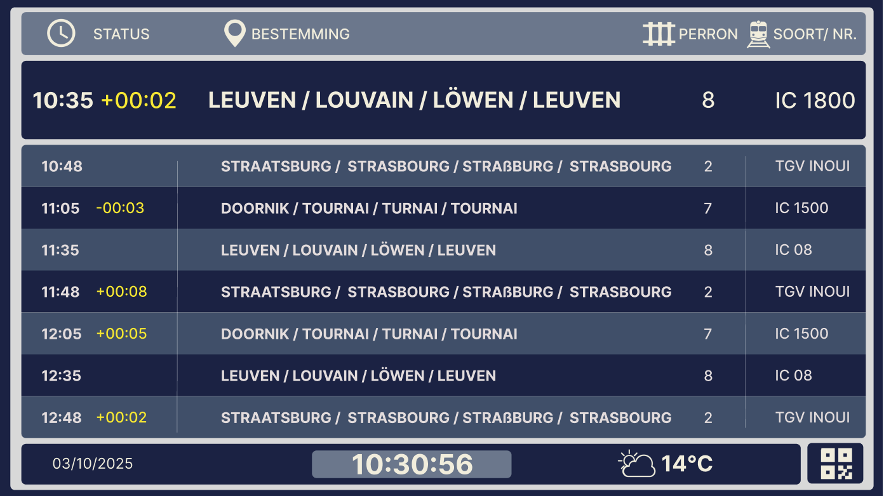
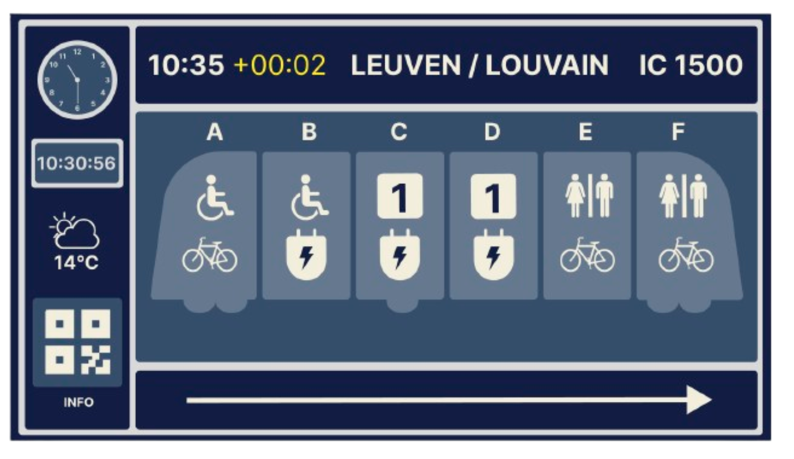

Week 4 — Basisprincipes van coderen en publicatie
In week 4 werden de basisprincipes van coderen behandeld, inclusief het werken met een testomgeving, handige softwaretools, gestructureerde code, en het gebruik van GitHub en Netlify om ontwerpen te publiceren.
Zelf paste ik deze week toe door mijn Figma-prototypes voor te bereiden voor publicatie en na te denken over hoe ik mijn ontwerp documentatie online toegankelijk kon maken. Op basis van klasfeedback besloot ik ook kleuren en lay-out aan te passen: subtiele lijnen en duidelijke afbakening werden toegevoegd voor betere structuur en overzicht.
Perronscherm

Overzichtscherm
Wagonscherm
